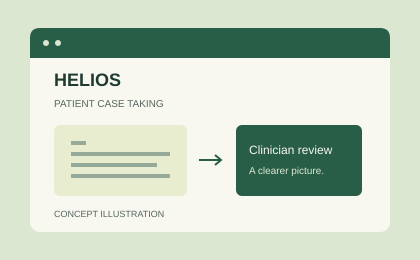
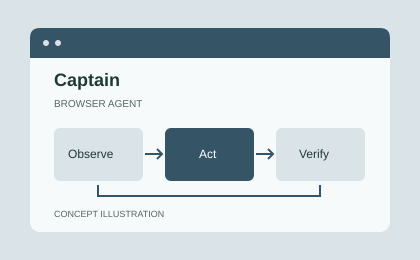

Java
Application development.
Nikunj / Software portfolio
I'm Nikunj, a B.Tech CDS student at MUIT, Noida. I build software that brings ideas to life — from patient case taking to browser agents.

01 / About me
I'm studying B.Tech CDS at Maharishi University of Information Technology (MUIT), Noida, and turning ideas into software with Java, Python, and MySQL.
My projects span digital patient case taking and browser agents. I'm interested in Artificial Intelligence, Data Science, Software Development, Web Automation, and Hackathons & Builds.
02 / My toolkit
Application development.
Scripting and software.
Relational data.
03 / Selected work
Different problems. The same curiosity.

Patient case taking, made digital. A software project focused on capturing patient cases in a dedicated digital workflow for clinician review.
Explore HELIOS on GitHub ↗
An agent for the browser. A project exploring how agents can work in the browser, interact with the web, and check the results of their actions.
Explore Captain on GitHub ↗04 / Education & achievements
Maharishi University of Information Technology (MUIT), Noida
In progress
Guru Harkrishan Public School (GHPS), Kalkaji
Guru Harkrishan Public School (GHPS), Kalkaji
SIH 2026
05 / Résumé
Education, skills, selected projects, and achievements.
06 / Get in touch
Have a project in mind or want to connect? Get in touch by email or phone, or find me on GitHub and LinkedIn.